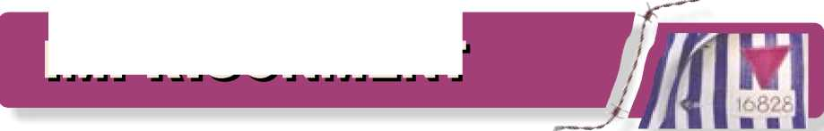
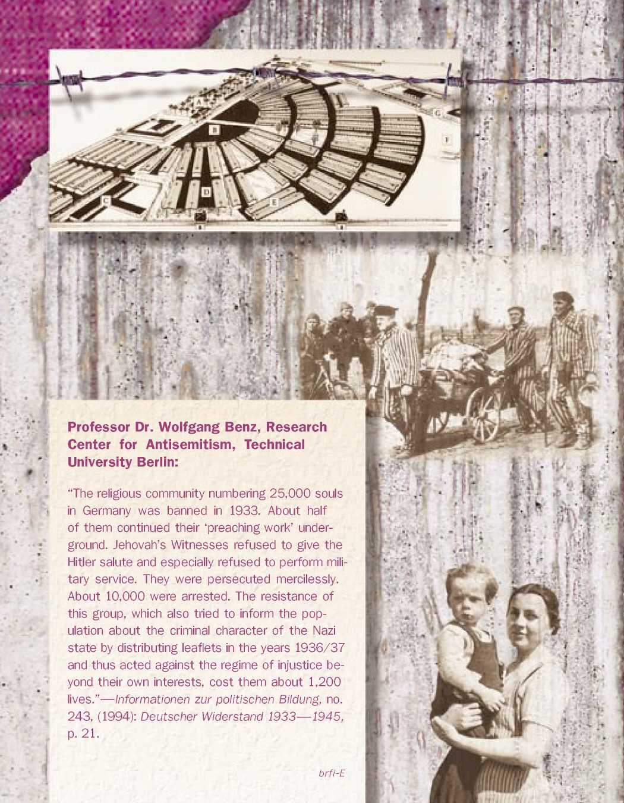

© 1999, 2003 All rights reserved
Purple Triangles—“Forgotten Victims” of the Nazi Regime. A Remarkable Story of Resistance. Guide to the History Exhibition
English (brfi-E)
Publishers:
Wachtturm Bibel- und Traktat-Gesellschaft der Zeugen Jehovas, e. V., Selters/Taunus, Made in Germany
Druck: Wachtturm-Gesellschaft, Selters/Taunus
By the end of 2002, about 600,000 visitors —many young people among them—have seen the traveling exhibition about the persecution of the prisoners with the “purple triangle” and other Jehovah’s Witnesses in the “Third Reich.” The exhibition was staged at memorial museums of former concentration camps, such as Mauthausen, Moringen, Neuengamme, Buchenwald, Sachsenhausen, and Bergen-Belsen, as well as in adult-education centers and other educational institutions. This effort was important and instrumental in saving these “forgotten victims,” as German historians call them, from oblivion. What further benefit comes from the presentation of such an exhibition to the public?
On January 27, 1998, the annual commemoration day for the victims of National Socialism, the Memorial Museum at Sachsenhausen camp dedicated the day to Jehovah’s Witness victims. Speaking at this occasion, Steffen Reiche, Minister of Culture and Science in Brandenburg, stated: “The behavior of Jehovah’s Witnesses in the camps and prisons embodies virtues which, today and in the past, are essential to the continued existence of a democratic constitutional state founded on the rule of law: namely their firm stand against the SS and the consideration toward their fellow inmates. Given the increasing brutality toward aliens and towards persons having a different political or philosophical outlook, these virtues are a must for every citizen in our country.”
This comment emphasizes the fact that exhibitions of this kind do far more than just inform about the facts of the bitter and fateful persecution of a religious minority under the Nazi regime, and it shows the value and necessity of documenting the past.
When the exhibition was staged in Hamburg in October 1997, a renowned weekly commented on the exhibition: “It achieves what such exhibitions should always aim for: out of the plain statistics of harassed people, of persons fired from their jobs, of inmates, of people tortured and murdered, it draws attention to the ordeals of individuals.”—Die Zeit, October 10, 1997, p. 24.
At the opening of the exhibition sponsored by the State Center for Political Education of Lower Saxony at the Memorial site of the Bergen-Belsen camp, one speaker said: “All persons depicted can only be mentioned on behalf of the many who were persecuted, imprisoned, and tormented because they firmly held to their religious convictions and did not adapt to the National Socialist surroundings. They are no remote and untouchable heroes but ordinary people, mortal like everybody else, who followed their conscience, stood up boldly for their convictions, and hence became good examples for our everyday life.”— Hannoversche Allgemeine Zeitung, April 20, 1998, p. 4.
Three sets of this exhibition exist with about 50 panels each, and they can be shown publicly under the following titles: “Jehovah’s Witnesses Stand Firm Against Nazi Assault” (as an accompanying exhibition for the public presentation of the video documentary with the same title, produced by the Watch Tower Society, or with other films about this topic produced by non-Witnesses), “Forgotten Victims,” (so far historians have been referring to Jehovah’s Witnesses as “forgotten victims of the Nazi regime”) and “Spiritual Resistance Out of Christian Conviction” (as was done as an accompanying exhibition of scientific forums with the same titles in Wewelsburg, Hamburg, and Frankfurt am Main in October 1997).
The basic idea for the exhibition panels stems from the French exhibition of the Cercle europeen des Ttemoins de Jehovah anciens deportes et internes (European Society of Jehovah’s Witnesses Former Concentration Camp Inmates), founded in Paris in 1990. However, the contents of the German panels have been revised and expanded. On November 6, 1996, the exhibition was displayed at the world premiere of the German video documentary Jehovah’s Witnesses Stand Firm Against Nazi Assault at the Ravensbruck Camp Memorial Museum. The prime minister of the State of Brandenburg wrote for that occasion: “The presentation of your film is an important step on the way to informing the public about the role of your religious association under the Nazi regime.”
Over 500 similar public showings of this video documentary have taken place in Germany since then; over 300 events being accompanied by the

exhibition. On January 23, 1998, at the opening of the exhibition in Stuttgart-Bad Cannstatt, Siegfried Schiele, director of the State Center for Political Education of Baden-Wurttemberg, stated: “All who resisted the Nazi regime—for whatever motive—deserve deep appreciation. And an important group among them are Jehovah’s Witnesses to whom we owe respect, respect which was somehow underexposed for a long time. Therefore, I am happy about this exhibition that can help compensate deficiencies. I was already able to get a first positive impression when touring the exhibition. I can also recommend the video documentary highly that I have already seen. History cannot be a quarry from which we pick whatever suits us. Jehovah’s Witnesses have a definite and exemplary place in the chapter which otherwise is the saddest chapter of our history.”
As the need arose, the Watchtower Society in Germany produced additional panels, with references to the locality of the exhibition, for example, for the city of Stuttgart and for the Bautzen Memorial Museum. (Some memorial museums received extra panels on permanent loan.) The panels were also copied in full size for the premiere of the Russian Stand Firm version, held on May 15, 1997, at the World Trade Center in Moscow, as well as for the premiere in Austria and the special exhibition “The Forgotten Victims,” on June 18, 1997, at the Mauthausen Camp Memorial Museum. The branch offices of the Watch Tower Society in Sweden, Denmark, and Norway made electronic copies of some exhibition panels and presented them at the Nordisk Museum in the center of Stockholm on January 14, 1998, and in Copenhagen on March 30, 1998. In these countries the panels were used and shown as a traveling exhibition in various cities.
This brochure only presents a selection of pictures and documents from the 50 three-dimensional panels. However, a new collection of panels has been selected to be computerized and offered free of charge as a valuable set of computer print-outs for public presentations and classroom use.
We desire this exhibition to continue contributing to the formation of unbiased opinions on the part of all citizens.
The Publishers

(References are in chronological order and present some of the valuable expert literature on the subject.)
“The extent of loyalty towards the state was the criterion for initiating persecution. . .. The ‘International Association of Earnest Bible Students,’ the ‘Watchtower Bible and Tract Society,’ were the first religious association to be hit by the Nazis, and they were hit the hardest. Hardly an analysis has been made, or any memoirs written about the concentration camps, which do not include a description of the strong faith, the diligence, the helpfulness, and the fanatical martyrdom of the Earnest Bible Students.”—Kirchenkampf in Deutschland 1933—1945, by Friedrich Zipfel, Berlin, 1965, p. 175.
“It is striking that no other religious sect suffered as much under National Socialism as did the Earnest Bible Students.”—“Die Ernsten Bibel-forscher im Dritten Reich,” by Michael H. Kater, published in Vierteljahrshefte für Zeitgeschichte, April 1969, Stuttgart, 1969, p. 183.
“The distribution of the ‘Resolution’ [on December 12, 1936] and of the ‘Open Letter’ [on June 20, 1937] were not only a very spectacular, but also were a new way of public preaching . .. [These were] campaigns throughout the ‘Reich’ which were so well coordinated that they could take place all over Germany on the same day and at the same time. . . . Throughout the whole Nazi era in Germany, there was no other resistance organization that took comparable initiatives.”—Widerstand “von unten.” Widerstand und Dissens aus den Reihen der Arbeiterbewe-gung und der Zeugen Jehovas in Lubeck und Schleswig-Holstein 1933—1945, by Elke Im-berger, Neumunster, 1991, p. 345.
“Being a ‘total state’ claiming the entire person, taking God’s place, and demanding the whole ‘Volkskorper’ [entire population] to be concordant with their ‘Fuehrer,’ the Nazi regime left no room at all for people who lived according to the commandments of the Bible Students’ doctrine. Thus, ‘resisting’ had to became a requirement for keeping the self-esteem and identity of the religious community.”—Zwisch-en Widerstand und Martyrium. Die Zeugen Jehovas im “Dritten Reich,” by Detlef Garbe, Munich, 1993, p. 529. The 4th edition was published in 1999.
“As early as in the Weimar Republic, Jehovah’s Witnesses were exposed to the hostilities of racial-nationalistic forces, of the church, and to the first legal measures from the state. .. . Although in 1933 the IBV [International Bible Students Association] tried to adapt to the new situation and declared their strictly nonpolitical and anti-communist nature, harsh conflicts with the government agencies soon followed. Already the spring 1933 saw heavy persecution, confiscations, and bans of publishing, preaching, and organizing.”—Widerstand und Emigration. Das NS-Regime und seine Gegner, by Hartmut Mehringer, Munich, 1997, paperback edition, 1998, p. 103.
“The first thing we can learn from the attitude of Jehovah’s Witnesses under the ‘Third Reich’ is that a small group of people in Germany, relying on their faith and the solid unity among them, succeeded in drawing away from the Nazi regime’s totalitarian reach, although at a high price. . .. Second, it should be an obligation for us, the [later] generations . .. to ensure that people will never again have to die in order to remain true to their conscience/—Hubert Roser, in: „Am mutigsten waren immer wieder die Zeugen Jehovas." Ver-folgung und Widerstand der Zeugen Jehovas im Nationalsozialismus, published by Hans Hesse, Bremen, 1998 and 2000, p. 253.
1 Flourishing congregations of Jehovah’s Witnesses (Bible Students) in Germany before 1933. Because of their intense preaching activity, they were well known among the populace.
2 As early as 1933, their refusal to participate in elections and to give the Hitler salute, and their religious activities in spite of governmental bans, resulted in the first repressive measures for Jehovah’s Witnesses and even detention in concentration camps.
3 On October 7, 1934, Jehovah’s Witnesses in Germany and in 50 other countries sent about 20,000 letters and telegrams to the German government protesting the persecution. The telegrams from abroad read as follows: “Hitler government, Berlin, Germany. Your ill-treatment of Jehovah’s witnesses shocks all good people of earth and dishonors God’s name. Refrain from further persecuting Jehovah’s witnesses; otherwise God will destroy you and your national party. Signed, JEHOVAH’S WITNESSES [city or community].”
MO X

k.MH I T U h
1 Many Witnesses, such as Max and Konrad Franke, practiced their faith in spite of persecution, some duplicating Watch Tower literature underground. Konrad was taken to the camps at Osthofen (1933), Sachsenburg (1934), and Sachsenhausen (1936 —1945), whereas his father, Max, was in Sachsenburg (1934) and Buchenwald (as from 1935).
2 Maria Hombach served as an underground courier. In February 1940, she was sentenced to three and a half years of prison, which she spent in solitary confinement. The judiciary set her free in 1943 after her Catholic parents pleaded for clemency. She discreetly continued her Witness activities until 1945.
3 Part of the book Jehovah (1934) from the German underground work, reduced photographically to the size of a matchbox.
4 On December 12, 1936, Jehovah’s Witnesses distributed a printed resolution all over Germany, protesting the persecution. On June 20, 1937, the “Open Letter” followed, containing more details.

1 Anneliese Krause (born in January 1938) not only lost her father (beheaded in Berlin-Plotzensee on December 22, 1939), she was also torn away from her mother. In January 1940, without prior notice, she was picked up from home and taken to a Nazi education school.
2 Berthold Mewes’ (born in 1930) mother was taken to Ravensbruck camp. His father was forced to hand his son over to the officials. Berthold, who met his parents again in 1945 when he was 15 years old, remembers: “The Nazis entrusted me to the care of a childless couple that lived on a small farm. In the morning I went to school, and in the afternoon I worked on the farm. Until 1943 I was allowed to write to my parents only once every six months. Then, all correspondence was forbidden.”
3 In 1939, Elisabeth, Paul-Gerhard, and Hans-Werner, the Kusserow family’s three youngest children, were picked up from school and from their home by officials who placed them in reform schools. The school report states: “Conduct: Very good. ... To this day Paul-Gerhard refuses to give the German salute, and he has not participated in the hoisting of the flag.“
4 After Germany annexed Alsace-Lorraine, Louis Arzt (born in 1930) from Mulhau-sen refused to give the Hitler salute. On July 7, 1943, he was taken away from his parents and confined in a Nazi reform school in Weingarten. —(In the group photograph, Louis Arzt is on the bottom right.)
5 The National Socialists took Eugene Jung (born in 1933 in Gomelange, France), his parents, and his five siblings to Upper Silesia. These had refused to give the Hitler salute and to hang Swastika flags in the windows of their home.
6 This picture of Simone Arnold was taken shortly before her mother had to bring the 11-year-old girl to a reform school near Constance. (The father had already been sent to a concentration camp.) The girl’s shoes were taken away immediately—the children walked barefoot from Easter until fall. The older children had to do hard work in the house and in the garden. She recalls: “We never played. We had no personal belongings, and speaking was forbidden. If a pupil was caught, he was severely beaten on his fingers with a stick.”

1 Preceding Lichtenburg and Rav-ensbruck, Moringen (near Gottingen) was one of the early concentration camps for women (1933—1937). Nearly half of the known women at Moringen were Jehovah’s Witnesses.
2 Among the Moringen inmates was 32-year-old Katharina Thoenes. The director “isolated” her and the fellow Witnesses from the others and enforced a correspondence, parcel and money ban, “because the women refused to do sewing for the winter relief work.”
3 Because he refused to pledge allegiance to the Fuehrer, 18-year-old Jonathan Stark was taken to the youth concentration camp of Moringen in 1944.—(On November 1, 1944, he was hanged as a conscientious objector in Sachsenhausen.)
4 In May 1939, shortly before the camp’s dissolution, more than 40 percent of the female prisoners in Lichtenburg were Jehovah’s Witnesses.
5 Erna Ludolph and many other female Witnesses were taken to Ravensbruck in May 1939, in order to help construct a new concentration camp there.
6 At Ravensbruck, the women had to work under the severest circumstances.—(Taken from an SS-propaganda photo album.)
Credit lines: Photo 2, Hauptstaatsarchiv Dusseldorf, RW58-8433, p. 4. Photo 6, Sammlungen der Mahn- und Gedenkstatte Ravensbruck/Stiftung Brandenburgische Gedenkstatten.

7
0 <
7 Therese Schreiber was among the many Austrian Witnesses whom the Nazis carried off to Ravensbruck and other concentration camps. Later a court in Vienna sentenced her because underground she had duplicated The Watchtower, a magazine of Jehovah’s Witnesses.
8 Charlotte Muller and Ilse Un-terdorfer were moved from Lichtenburg to Ravensbruck camp. Both had been active in their faith despite the ban.
9 The camp inmates with the purple triangle became known as reliable and trustworthy workers. This card allowed Charlotte Muller (as from 1942) to serve as a housekeeper for an SS family close to the camp.
10 In 1944, a small group of Ukrainian girls at Ravensbruck camp, among them Alekseyevna Yarosh, became familiar with the teachings of Jehovah’s Witnesses and soon joined them.
11 Even under the extreme conditions of camp life the Witnesses looked for opportunities to talk to each other about their faith and, at the risk of their lives, to read Bible literature.—(The modern painting, displayed at the Ravensbruck Memorial Museum, is based on an eye-witness report.)

12 Sachsenhausen concentration camp (1936—1945), north of Berlin. In pre-war years, about 5 to 10 percent of all held captive in the camps were Jehovah’s Witnesses. When new Witnesses came, they were immediately taken to the “penal labor unit,” where the hardest and dirtiest work had to be done for 10 to 12 hours a day, including Sundays.
13 The Bible Students (Jehovah’s Witnesses) constituted a separate category of prisoners, and were stigmatized with a purple triangle. Their firm stand exposed them to special cruelty by the SS guards and the kapos (inmates serving as overseers), and they were at their mercy.
14 As one of many punishments, the prisoner was tied and with iron rods beaten on the naked backside.
15 Regardless of the weather, the prisoners often had to stand lined up for hours at the roll-call squares (here at Sachsenhausen). On September 15, 1939, at this very place the SS had conscientious objector August Dickmann executed in the presence of the entire camp.
Credit line: Photo 15, Gedenkstatte und Museum Sachsenhausen/Stiftung Branden-burgische Gedenkstatten.
hrayibtnijiit ihuNkflU-Tv uiC^aKdtu.fovni

16 The camp inmates could be punished for trivial “offenses,” for example, by hanging them on a stake, the so-called “tree hanging,” an extremely painful measure.
17 In addition to the degrading conditions, the camps were extremely overloaded. Jehovah’s Witnesses were permitted to share barracks with their fellow believers, but because they held religious meetings, the SS later separated them. However, since they now preached more to other inmates, the SS put the Witnesses together again. Commented an observer: “One cannot escape the impression that, psychologically speaking, the sS were never quite equal to the challenge offered them by Jehovah’s Witnesses.”—Eugen Kogon.
18 Due to poor feeding, many died or suffered from malnutrition and diseases, such as hunger-related typhus.
19 Special furnaces were used to get rid of the countless dead bodies.
(All photographs on this page were taken at Buchenwald camp shortly after liberation.)
IMPRISONMENT

20 At Buchenwald concentration camp, (1937—1945) located near Weimar, and at other camps, from 1938 onward the SS “isolated” Jehovah’s Witnesses in special barracks behind barbed wire, not allowing them to write letters for nine months. During the three and a half years to come (at Buchenwald—where the Witnesses made up the greatest number of prisoners in the “penal labor unit”—even until the end of the war), they were not allowed to write to their relatives more than 25 words once a month.
21 The following text was stamped or printed on the camp stationery: “The prisoner remains, as before, a stubborn Bible Student and refuses to reject the Bible Students’ false teachings. For this reason the usual privileges of correspondence have been denied him.”
22 The SS would often present to the Witnesses a “declaration.” By signing this and renouncing their faith, the Witnesses could have been set free. Yet, only few signed it.
23 At the risk of his life, Wilhelm Tollner gave Bible talks at Buchenwald.
24 The Mauthausen concentration camp in Austria (1938—1945). On September 27, 1939, coming from Dachau camp, 145 prisoners wearing the “purple triangle” arrived. Some were forced to do hard labor at the notorious quarry with its “stairs of Death.”
25 August Kraft from Vienna, who for a time had organized the underground work of Jehovah’s Witnesses in Austria, was arrested on May 25, 1939. He died at Mauthausen in February 1940.
26 The Gestapo hunted for Albert Wandres (left) for three years. The Special Court in Frankfurt am Main sentenced him to five years of detention. Also Martin Potzinger (right) from Munich was very active underground. Despite hunger, both men had to perform hard physical labor at Dachau and Mauthausen; both survived.
27 Hans Gartner, a hairdresser from Zwingenberg, did not survive his detention at Mauthausen and Dachau. In his home town, a street bears his name today.
Credit line: Photo 24 (upper) and 25, DOW, Vienna, Austria

28 More than 1,000,000 people died at Auschwitz, most of them because they were Jews. In the biggest concentration, labor and extermination camp complex (from June 1940 until January 27, 1945) Roma (“Gypsies”), Poles, Jehovah’s Witnesses, and others died as well.
29 In 1942, Russian Aleksej Ne-potschatov was tattooed with the number 154888 at Auschwitz. Being a prisoner of war, he barely escaped being murdered. At Buchenwald camp he met German Jehovah’s Witnesses and accepted their faith.
30 Gestapo photos taken of Jan Otrebski, a Polish Witness who received prison numbers at three camps: Auschwitz (no. 63609), Gusen (no. 13449), and Mauthausen (no. 31208).
31 Elsa Abt from Danzig was arrested in May 1942, and her apartment was sealed by the police. She entrusted her two-year-old daughter to a family in the same apartment building. Together with eleven other Witnesses Elsa was taken to Auschwitz-Birkenau, and her husband Harald (left) was taken to Buchenwald. In January 1945, she experienced the “evacuation” transports from camp to camp: to GroB-Rosen, Mauthausen, Bergen-Belsen, and Dora-Nordhausen, where she was freed.
Credit line: photos no. 28, Panstwowe Mu-zeum Oswi^cim-Brzezinka
30

32 Camp bureaucracy meticulously kept account of all inmates. After the dissolution of the Niederhagen concentration camp (1939—1943; for some time the camp was under the jurisdiction of the Sachsenhausen camp) a “remaining labor group,” consisting almost entirely of Jehovah’s Witnesses, stayed at Wewels-burg. Theodor Sponsel was one of them.—(Group picture taken shortly after liberation in 1945.)
33 Max Hollweg recalls how the SS tried to work 26 conscientious objectors to death (1942). They did not succeed because other Witnesses secretly gave them food and support.
34 Despite the ban and until his imprisonment, Georg Klohe secretly produced sound records with Bible-based talks (1934—1936). In 1944, while at Wewelsburg camp, he managed to have a cello be built for him. The SS conceded, because Jehovah’s Witnesses had no prospect of being released anyway. However, the musical instrument never came to be used in a prisoners’ orchestra, and Georg Klohe only occasionally played it after work.
IMPRISONMENT
35 Simone’s (center) parents Emma and Adolphe Arnold from the Alsace (France) adhered to their faith and were both imprisoned. In 1942, Adolphe Arnold was sent to Dachau camp. While still in freedom and once a month, wife Emma mailed him a cake with three hidden slips of paper containing Watchtower articles. Adolphe memorized the texts. When liberated he was able to take home three slips hidden in his jacket.
36 In January 1936, Leopold En-gleitner (Austria) was arrested for the first time. Between October 1939 and July 1943, he was sent to the camps at Buchenwald, Wewelsburg, and Ravensbruck. Upon arrival in the camp he was so severely beaten on the head that he kept painful long-term injuries. After his release he had to report to the police. In spring 1945 he escaped, thus avoiding being drafted into the army.
37 Margarete Unterner (Alsac) refused to support the Reichs Work Service and, in 1942, was imprisoned in Saverne, and later at Schirmeck-Vorbruck camp. Her husband Marcel refused to join the German army and was sent to the military prison in Berlin-Tegel. Due to a severe nerve disorder, he was released.

38 Despite of the ban, Johanna and Johann Degen held Christian meetings at their house in Lorsch. As a result, in 1936, Johann was sentenced to two years in Darmstadt prison. When his time was over in October 1938, he was transferred to a concentration camp (Dachau). In January 1941, he died from hunger-related typhoid at Mauthausen camp.
39 At his job in the quarries near Zwingenberg, Adam Heim helped persecuted citizens. He was denounced and sentenced by the Special Court in Darmstadt. There followed time in prison and at Dachau camp.—(Later he died in a motorcycle accident.)
40 Horst Schmidt, (Emmy Zeh-den’s foster child) carried Watchtower publications as a courier from Berlin as far as Danzig. After his arrest, he was sentenced to death in 1944. From Brandenburg-Goerden, fettered and awaiting his execution, he was freed on April 27, 1945.
41 For their faith, twelve members of the Kusserow family from Lippspringe were sent to various prisons, penitentiaries, concentration camps, or Nazi reform schools. Two sons were executed as conscientious objectors.

1 In front of all prisoners assembled in the roll-call square at Sachsenhausen, August Dick-mann, one of Jehovah‘s Witnesses, was shot on September 15, 1939, by order of Heinrich Himmler, Reichsfuehrer SS, for being a conscientious objector and Volksschaedling (harm to the people). Shortly thereafter, newspapers in Germany and abroad reported about this police judgment.
2 Jacob von Bennekom (Netherlands) was imprisoned as one of Jehovah’s Witnesses in Rotterdam and in Amersfoort camp. In November 1944, he was shot when he refused to set up anti-tank barriers close to the town of Zwolle, as all other prisoners did. This incident was reported by an eyewitness who became one of Jehovah’s Witnesses after the war himself.
3 Willi Letonja, (Austria) an ardent National Socialist, served in Hitler’s army. When he learned the Bible’s message from his mother and brother, he became one of Jehovah’s Witnesses himself in 1941. He refused further military service and was beheaded on the Brandenburg guillotine (picture) on September 1, 1942. Shortly before his execution, he said to his brother: “Anton, why are you crying? This is not a reason to cry, this is a reason for joy!”

3
jtwi SaEliliHHInge ftHSstkn
4 After having spent 13 months at Munich-Stadelheim prison for duplicating and distributing Watchtower magazines, Vin-zenz Platajs (Austria) was beheaded at Brandenburg on October 9, 1944.
5 Heinrich Fundis from Sulzfeld refused to follow the call for military service—beheaded on December 18, 1941.
6 Paul Weseler belonged to a group of active Jehovah’s Witnesses from Oberhausen, Muhlheim/Ruhr, and Karlsruhe (Wilhelm Bischoff, Julius Engelhard, Auguste Hetkamp, Johann Horstgen, Friedrich and Klara Stoffels). All were executed in August 1944.
7 Because he refused to put on an army uniform, 19-year-old Sigurd Speidel from Sindelfingen was beheaded on January 27, 1943.
8 On May 9, 1941, Kurt Liebold from Cossengrun (Thuringia) was beheaded for being a conscientious objector. He had earlier spent two years in prison for participating in one of the mid-30s leaflet campaigns of Jehovah’s Witnesses.
9 After three years of detention at Fort Torgau, Max Moserth from Burgstadt was beheaded on the charges of Wehrkraftz-ersetzung (“demoralization of the troops”) on June 26, 1942.

10 Executed as a conscientious objectors: Rolf Appel (in 1941), a printery owner from Suderbrarup, and Walter, his 17-year-old son (in 1944). The parents lost custody of the younger children, and the authorities forced the mother into poverty.
11 As early as 1934, Heinz Ber-necker from Konigsberg (front right) was forced to work in a labor camp in East Prussia. From 1938 to 1942, he was again detained for his conviction. When he was guillotined at Brandenburg as a conscientious objector on June 19, 1942, his wife Elisabeth was in the Ravensbruck camp. The grandparents took care of the three children they left behind.
12 The Wohlfart family from Portschach (Austria). On December 7, 1939, Gregor, the father, was beheaded as a conscientious objector along with other Witnesses in Berlin-Plotzensee. For the same reason, his 20-year-old son Gregor was executed on March 14, 1942. Franz was sent to the Rollwald labor camp. The youngest son, Willibald, along with his siblings Ida, Annie, and Kristian, was sent to a Nazi reform school located at a monastery in Landau. Both boys were forced into front-line duty in Russia. Willibald was killed there, while Kristian suffered severe injuries.
13 In the death cell, Johannes Harms from Wilhelmshaven (beheaded January 8, 1941) wrote: “One of Jehovah’s Witnesses is given an opportunity to break his covenant even when in view of the gallows. Therefore, I am still in the midst of the fight.”
14 Hans Rehwald, now at age 34, had spent five years in prison. Before his execution by a firing squad in Konigsberg on February 1, 1943, he spoke a prayer so touching that no soldier fired. Following the second order one shot hit him in the stomach. The officer killed the conscientious objector with his pistol. At this time Hans Reh-wald’s wife Martha and other relatives were imprisoned in concentration camps.
15 On April 27, 1940, Wilhelm Kusserow, a conscientious objector, was shot by order of the military court in Munster. His court-appointed counsel later wrote the family: “He asked me to send you his greetings. He awaited death honorably, and he died immediately.”
16 Wolfgang Kusserow, sharing his brother Wilhelm’s conviction, was beheaded at Brandenburg penitentiary on March 28, 1942. Defending himself before court, he said: “I am sure that if Jesus Christ lived on earth today, he would experience the same persecution today as in the past.”
17 Karl Kuhnel, a carpenter from Clausnitz (Ore Mountains), was imprisoned because he had mailed the petition of June 1933 to the authorities and private citizens. In 1937, he and his wife lost custody of their two children. Because he refused to pledge allegiance to the flag, he was beheaded in Berlin-Plotzensee on October 24, 1939.
18 Helene Gotthold, a nurse and mother of two, was married to a miner and lived in Herne and Bochum. In 1926, she became one of Jehovah’s Witnesses. In 1937, while her trial was pending, the Gestapo (secret police) beat her so severely that she suffered a miscarriage. On December 8, 1944, she and three other female Witnesses were executed by the guillotine for being active for their faith.
19 Emmy Zehden (center) from Berlin provided a hideout for three conscientious objectors, including her foster son and nephew Horst Schmidt, to whom she wrote a farewell letter on June 9, 1944, the day of her execution. The execution record states: “Without resistance the convict was placed under the guillotine. She was calm and self-composed ...” Today a street in front of the Berlin-Plotzensee prison bears her name.

18
1 As the battle lines approached, the SS “evacuated” the camps, forcing the prisoners to march west and south. On the so-called death marches the guards mercilessly murdered every prisoner who was too weak to keep up. Martin Seyferth from Oschatz, together with other Witnesses, survived the death march from Dachau toward the German Alps in April 1945.
2 All 230 Jehovah’s Witnesses survived the death march of tens of thousands of prisoners from Sachsenhausen and other camps to Schwerin in April and May 1945. The Witnesses formed a cohesive group, assisting each other to survive. Among them were Jan Steinfort (Netherlands) and Louis Piechota (France), shown here standing next to a memorial stone.
3 Paul Rehwald from Konigsberg was also among those who experienced the death march from Sachsenhausen. When the German front line collapsed and Allied forces freed the camps, the regime of terror came to its end after 12 years. Like the prisoners shown in this photograph, many Witnesses-most of them after many years of detention-headed home.
Credit Line: Photo 1 (left), KZ-Gedenkstatte Dachau, Archiv
4 The SS moved 9,000 prisoners from Neuengamme camp to the Baltic Sea and packed them onto the ships Cap Ar-cona, Thielbeck, and Athen. On May 3, 1945, after a British fighter plane attack, two ships sunk, and only a few prisoners survived. Among the survivors of the Cap Arcona disaster was Witali Kostan-da (Ukraine) who had met the prisoners with the “purple triangle” in the camp and now became a Witness himself.
5 The SS also ordered the “evacuation” of the Stutthof camp, near Danzig, by way of land and sea. Together with about 1,900 prisoners, Feliks Borys from Chojnice (Poland), along with nine other Witnesses, had to march to Slupsk. “[Soon] only about 800 of us were left,” he recalls. By carrying Wilhelm Scheider (Poland), he helped him survive. After his liberation Borys headed home on foot, where he arrived two months later.
6 Jehovah’s Witnesses from the Stutthof camp. After a dramatic journey across the Baltic Sea in a barge, they happily landed on the Danish island of M0n on May 5, 1945.

1 After 52 years, Anastasia Kazak (Ukraine) and Hermine Schmidt (right) meet in Moscow, on May 15, 1997, at the Russian premiere of the documentary video Jehovah’s Witnesses Stand Firm Against Nazi Assault. Anastasia became one of Jehovah’s Witnesses in the Stutthof concentration camp, and both had survived the dangerous journey of camp inmates across the Baltic Sea to Denmark.
2 When the Ravensbruck camp was evacuated, Alois Moser from Braunau (Austria) and 25 fellow Witnesses were ordered to accompany an SS transport. During the night the guards disappeared. In Schwerin Alois Moser met a number of Jehovah’s Witnesses who had joined the death march. Starting out from northern Germany, he made his long way home to Austria.
3 Gertrud Ott from Danzig was a prisoner in the camps in Auschwitz (from December 1942 to January 1945), Mauthausen, GroB-Rosen, and Bergen-Belsen (from January to May 1945). After her liberation she attended the Watchtower Bible School of Gilead in New York and became a missionary serving in Indonesia, Iran, and Luxembourg.
4 A group of Jehovah's Witnesses rejoicing over their liberation from the Mauthausen camp on May 7, 1945. Among them is Martin Poetzinger (first left, standing).
5 Before the Gestapo arrested and tortured him cruelly, Erich Frost from Leipzig had supervised the underground work in 1936/37. He was put under permanent arrest (1937 —1945). In the Sachsenhausen camp, with the fellow Witnesses in mind, he composed a song that found its way outside the camps and strengthened his fellow believers.
6 In 1935, Arthur Winkler from Bonn experienced the cruel treatment in the Esterwegen camp. Later he directed the underground work in Germany from the Netherlands. The Gestapo sought to arrest him after Germany had occupied Holland (May 1940), but he was not captured until October 1941. He survived the death march from Sachsenhausen with the help of fellow Witnesses, because they transported him in a cart belonging to the SS.
7 Joseph Rehwald from Konigsberg was first sent to Stuhm prison (East Prussia) and then to Sachsenhausen camp, because he refused military service. From his family of eight, four brothers (two were executed), one sister, and his mother were imprisoned for adhering to their faith.
8 Gerrit Benink (Netherlands) with his tin container that served the prisoner as a bowl for soup and other food. After his arrest in March 1941, he was sent to the camps in Sachsenhausen, Buchenwald, and Neuengamme; freed on May 5, 1945.
9 Because they were active Jehovah’s Witnesses, Hildegard and Ernst Seliger endured a combined total of more than 40 years of confinement under the Nazi regime and in Communist rule in East Germany.
10 In August 1940, Victor Bruch (Luxembourg) was arrested and passed through several concentration camps, such as Buchenwald, Lublin, Auschwitz, and Ravensbruck. After marching many days, he was freed on May 3, 1945, together with 49 other Witnesses.
11 Max Henning, arrested in the Netherlands in March 1943, was imprisoned in Rotterdam, Scheveningen, Vught, and at Buchenwald camp. He was freed on April 11, 1945.
12 Gertrud Poetzinger, who worked underground for Jehovah’s Witnesses in Munich and Silesia, was sent to prison and to Ravensbruck camp. In 1943, she was assigned to look after the children of an SS family in Oranienburg (photo). Her husband Martin endured years of detention at Dachau and Mauthausen camp. (See page 27, image no. 4.) They were reunited after war in 1945.
13 The Gestapo arrested Evert and Ansje Dost (Netherlands) in March 1942. Evert was sent to the camps in Amersfoort and Neuengamme, Ansje to Ravensbruck camp. Both were freed in May 1945.
1933 Following the Reichstag fire, the emergency presidential decree for the “prevention of Communist violent acts against state security” suspends many fundamental civil rights (February 28). Bans on Jehovah’s Witnesses in most states of the Reich based on false accusations; a petition, addressed to the Reich Chancellor and to officials, remains unsuccessful (April and June). Confiscations of congregation property, burning of Watch Tower literature, and first imprisonments of Witnesses in concentration camps (July).
1934 Jehovah’s Witnesses duplicate Watch Tower publications underground, since the police check their mail in order to stop the importation from abroad. By March, some 4,000 house searches, 1,000 arrests (400 of them were sent to concentration camps) and 200 cases of maltreatment are registered. Many Witnesses in civil service are fired (as of June). On October 7, a flood of protest telegrams reaches Hitler who shouts hysterically: “This brood will be exterminated in Germany!”
1935 General ban of Jehovah’s Witnesses in the Reich with the aim of removing them from civil service (April 1). Special Courts sentence countless Witnesses to long prison sentences and heavy fines because they held Christian meetings and distributed their publications. Disregarding the given legislation, the Gestapo arbitrarily order protective custody for Jehovah’s Witnesses and send them to concentration camps (June 17 and September 9).
1936 The Minister of the Interior of the Reich prohibits the Witnesses’ selling of “Bibles or other religious publications, which usually are not offensive;” this leads to even more imprisonments (January 30). The authorities are allowed to withhold unemployment benefits and old-age pensions (as from February 2) from Jehovah’s Witnesses. Many Witnesses have to endure abuse or public humiliation because of not participating in the “Reichstag elections” (March 29). The Gestapo and the Criminal Police form special units, the Special Courts set up special departments, in order to investigate Jehovah’s Witnesses and to sentence them (June). Despite massive arrests (August 28), Jehovah’s Witnesses succeed in distributing the Lucerne protest resolution all over the Reich (December 12).
1937 Police and the courts are instructed to “use the harshest measures” against Jehovah’s Witnesses. The court sentences grow longer. After having completed their sentence in prison, the Witnesses are often sent to concentration camps or back to prison. About 4,000 Witnesses are arrested, and often groups of them are sentenced at “Bible Students trials,” about which the newspapers report openly. The family and probate courts successfully initiate lawsuits to isolate children from their parents. Jehovah’s Witnesses organize a second tract campaign all over the Reich in order to draw people’s attention to the Gestapo terror (June 20).
1938 About 5 to 10 percent of the concentration camp inmates in the pre-war time are Jehovah’s Witnesses. They are kept “isolated” in special barracks, surrounded by barbed wire, (in some camps even earlier) and for nine months they are not allowed to send or receive any mail (March). In Switzerland the Witnesses document the persecution in Germany in the book Crusade Against Christianity and mentioned that “now already 6,000 ... suffer in prisons and concentration camps” (May). In a speech held in New York and broadcast by 60 radio stations, J.F. Rutherford, then president of the Watch Tower Society, condemns Hitler and the persecution of the Jews with explicit statements (October 8).
1939 As the first conscientious objector of the war to be sentenced to death by police judiciary, August Dickmann is publicly shot at Sachsenhausen camp, (September 15) and the succeeding days this is publicized in broadcasts and press releases. With the outbreak of the war, the abuses of imprisoned Witnesses have increased. During the severe winter, 100 out of the 400 Witnesses in Sachsenhausen die from maltreatment, hunger, or exhaustion.
1940 State police order the arrest of all Witnesses in the Reich at a set time; on June 12, Witness homes are raided. In July, Swiss authorities confiscate the book Crusade Against Christianity (up to September 1944). The German judiciary has already sentenced to death 112 conscientious objectors who are Jehovah’s Witnesses (August). (By the end of the war, the number of executed Witnesses will reach about 270, among them 50 Austrians.)
1941 Ludwig Cyranek, who secretly forwarded Watch Tower literature in Germany and Austria during 1939 and 1940, is sentenced to death (March) and executed in Dresden (July 3). Julius Engelhard and others continue his work (1939 until April 1943).
1942 The “Newsletter of the German Distribution Center of the Watchtower” and other items circulate among Jehovah’s Witnesses inside and outside the camps. The brutal torture of Witnesses in pretrial detention is officially allowed to continue. Hitler insists that the Bible Students have to be “exterminated” (August). However, the extreme situation of the Witnesses in the camps eases somewhat because the SS come to value the labor force of the camp inmates.
1943 In many places in Germany and Austria, Jehovah’s Witnesses are supplied with Watch Tower literature from the underground, and letters are smuggled out of the concentration camps. The SS have to recognize that Jehovah’s Witnesses are standing firm despite their “isolation” in the camps, and they disperse the Witnesses to the other barracks (September). At Ravensbruck camp, Asoziale (inmates considered “antisocial”) are put into one barrack (block) with the Bibelforscher (Bible Students).
1944 Himmler orders surprise police raids within various concentration camps, and large quantities of Watch Tower literature are found (April). Outside the camps, the Gestapo also breaks up underground networks, and 254 Witnesses are arrested. Julius Engelhard and Auguste Hetkamp are sentenced to death (June) and executed in Brandenburg (August). Nevertheless, underground work continues in different places, and Watch Tower literature is duplicated even in the Wewelsburg camp. The Military Court of the Reich, which is “overloaded”, delegates processes against conscientious objectors—numerous cases involve Jehovah’s Witnesses—to subordinate courts (August). Death sentences have by now become a pure formality.
1945 Liberation of Auschwitz (January 27). During the forced evacuations of the concentration camps and on the “death marches” south and west, the inmates with the “purple triangle“ (Jehovah’s Witnesses) help each other in order to avoid being shot by the SS. Liberation of the camps Buchenwald (April 11), Bergen-Belsen (April 15), Sachsenhausen (April 22), Dachau (April 29), and Ravensbruck (April 30), as well as of the penitentiaries in Brandenburg (April 27), Waldheim (May 6), and of other detention centers. All 230 Witnesses survive the “death march” to Schwerin (May 3). The surviving Witnesses from the Stutthof concentration camp go ashore on the Danish isle of M0n (May 5). Capitulation—the German Reich ceases to exist (May 8)! Jehovah’s Witnesses begin their German postwar history with 7,000 members.
brfi-E
Professor Dr. Wolfgang Benz, Research Center for Antisemitism, Technical University Berlin:
“The religious community numbering 25,000 souls in Germany was banned in 1933. About half of them continued their ‘preaching work’ underground. Jehovah’s Witnesses refused to give the Hitler salute and especially refused to perform military service. They were persecuted mercilessly. About 10,000 were arrested. The resistance of this group, which also tried to inform the population about the criminal character of the Nazi state by distributing leaflets in the years 1936/37 and thus acted against the regime of injustice beyond their own interests, cost them about 1,200 lives.”—Informationen zur politischen Bildung, no. 243, (1994): Deutscher Widerstand 1933—1945, p. 21.